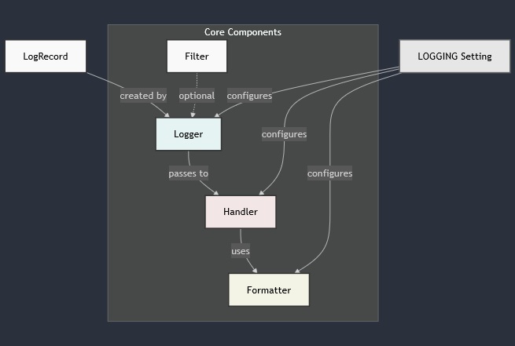
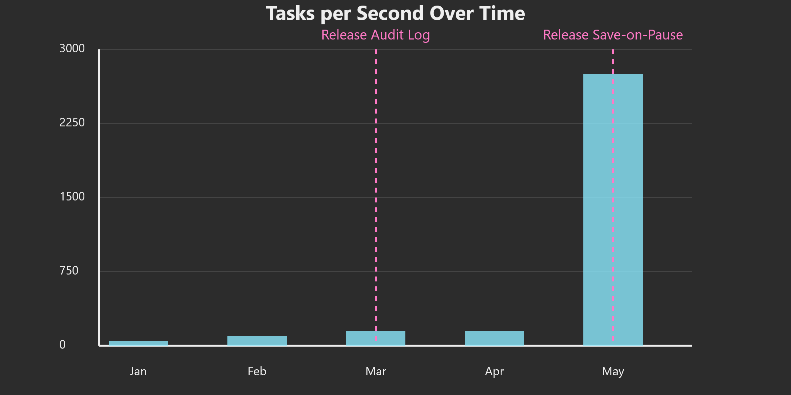

git clone https://github.com/metallapan/django-logging-tutorial.git cd django-logging-tutorial #(either) ./bootstrap.sh #(or) python3.10 -m venv .venv . .venv/bin/activate # (or activate.[fish|csh]) pip install -r requirements.txt inv init run # Convenience to setup, populate database, and run

LOG = logging.getLogger(__name__) LOG.info("Some message")
LOG = logging.getLogger(__name__) LOG.info("Some message", extra={"context": context})
extra passedLogRecord might be extended!class JSONFormatter(logging.Formatter): def format(self, record: logging.LogRecord) -> str: # Get basic log record attributes log_data = { "timestamp": self.formatTime(record), "level": record.levelname, "logger": record.name, "message": record.getMessage(), "extra": record.extra, # logger.info('message', extra={'extra': context}) } return json.dumps(log_data) # better not be any timestamps in extra
catalog/logging.pyif transaction.get_autocommit(): do_thing() else: transaction.on_commit(do_thing)

catalog/signals.pyIf we can figure out how we are called, we can grab information from calling scopes. How would we do this?
inspect# Get the request object for frame in inspect.stack(): if frame[3] == 'get_response': request = frame[0].f_locals.get('request') break
catalog/logging.py, retrieve the requesting user, if any, and add to the log.class UserAuditLog(models.Model): timestamp = models.DateTimeField(auto_now_add=True) event_type = models.CharField(max_length=100) user = models.ForeignKey(User, null=True, on_delete=models.SET_NULL, related_name='log_records') message = models.TextField() data = models.JSONField() class Meta: indexes = [ models.Index(fields=['event_type', 'timestamp']), models.Index(fields=['user']), ]
class AuditLog(models.Model): timestamp = models.DateTimeField(auto_now_add=True) event_type = models.CharField(max_length=100) user = models.ForeignKey(User, null=True, on_delete=models.SET_NULL) content_type = models.ForeignKey(ContentType, on_delete=models.CASCADE) message = models.TextField() # NOTE: Requires all objects to have the same PK type object_id = models.UUIDField() content_object = GenericForeignKey('content_type', 'object_id') data = models.JSONField() class Meta: indexes = [ models.Index(fields=['event_type', 'timestamp']), models.Index(fields=['content_type', 'object_id']), ]
user = User.objects.get(pk=1) # filter records if using a specific AuditLog for users user.log_records.filter(message__icontains='logged in') # or, for generic key ct = ContentType.objects.get_for_model(User) logs = AuditLog.objects.filter( content_type=ct, object_id=user.id, message__icontains='logged in' )
# Add auditlog as an inline of User class AuditLogInline(admin.TabularInline): model = AuditLog fk_name = "user" ... # Unregister the default UserAdmin admin.site.unregister(User) class CustomUserAdmin(UserAdmin): inlines = UserAdmin.inlines + (AuditLogInline,) admin.site.register(User, CustomUserAdmin)
docker compose -f solutions/el.yaml to pull and
start Elasticsearch and Kibanacatalog/logging.py